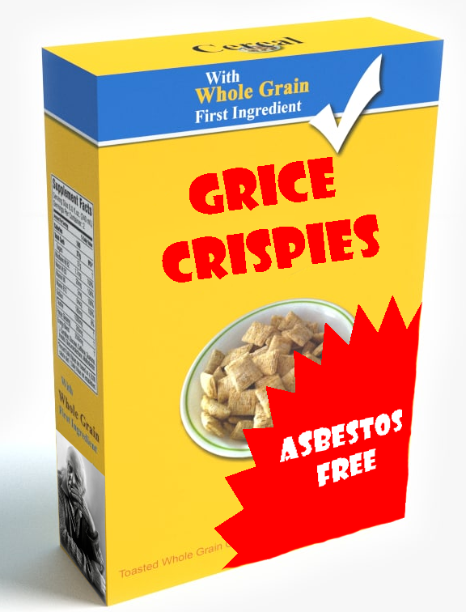

“If people are acting cooperatively, we can skip a whole lot of pain”
Today, we’ll talk about some of the things that grow out of that
Flouting vs. Violating maxims
Presupposition
Conversational Implicature
Speech acts
Deixis
All that we’re leaving behind
Quality
Quantity
Relevance
Manner
“Maria was alone in the room… or so she believed”
“Matt, who is absolutely not Batman, taught the class.”
“Marvin left at 5:44 and 30 seconds.”
“Did Ramchand ever work with Sam?” “He hates dogs.”
“Did Sarah buy chicken?” “I think so”.
It allows us to get a lot more done.
Less confirmation, clarification
More efficiency

Vic: Have you ever been in love?
Leighanna-Jean: Yes.
V: With who?
LJ: Dylan.
V: Anything else you wanna say about Dylan.
LJ: No.
V: Is Dylan a boyfriend.
LJ: No. Can't be a boyfriend if you're in jail.
V: [Changing topic] What is too serious to be joked about?
LJ: Is this a riddle?
V: No... it's a question.
LJ: Oh my gosh, I thought that was like, in school you know where they ask you those riddles.
FIN.
Actually being uncooperative by failing to follow these guidelines
Violating maxims actually messes up conversations
You will violate these maxims for your Semantics and Pragmatics Homework
Intentionally violating a maxim in a way that the listener can detect to express a specific meaning
This carries meaning in the conversation
It can have great comedic effect
Unless it’s undetected, the conversation is not messed up at all
“Oh, yes, Taco Bell is truly gourmet cuisine” (it is clearly not)
“Is this going to be on the test?” “That’s a good question.”
“How does my hair look?” “We haven’t been to a cat show in a while.”
“Should I build syntax trees or work on phonology problems for the exam?” “Yes”
Those things which are implicitly assumed about the discourse, participants, and world more generally
“Were you there when Matt made that bad joke?”
“Do you still eat breadsticks with every meal?”
“Did you meet the happy linguistics majors?”
Presupposes that happy linguistics majors exist
(Of course they do!)
Presuppositions are assumptions made, but which aren’t definitionally true
Presuppositions can be canceled
Presuppositions aren’t canceled by sentence negation
Matt regretted eating the week-old enchiladas
Maria forgot to water the plants
Rebecca’s student was very strange.
Once it started raining, nobody in San Diego could drive.
Matt threw his remote while lecturing again.
Matt didn’t regret eating the week-old enchiladas
Maria didn’t forget to water the plants
Once it started raining, everybody in San Diego could drive just fine.
Matt didn’t throw his remote while lecturing again, it stayed in his hand.
Presuppositions can be made in bad faith, taking as presupposed things that aren’t true or agreed upon?
“Were you angry when you stole my cookies?”
“Have you stopped assigning evil homeworks?”
“Ugh, is your boyfriend being a jerk again?”
“All the hard work I’ve done to stop academic integrity violations hasn’t been enough, we need to launch cheaters into the sun.”
“You forgot to give your professors a gift for Teacher’s Day”
They’re commonly used (and abused)
They’re different from entailment in that they’re true even when negated, and can be canceled.
And they express truths, not just assumptions
What is suggested, but not expressed or entailed, by an utterance.
Jelena didn’t have one before
She’d needed one for a long time
Her computer wasn’t backed up
Jelena owns a computer
Jelena used her own money
Jelena is Serbian
Jelena owns a Mac
Jelena is a Dean at UCSD
She went to Costco for the hard drive
… everything else
Jelena didn’t have one before
She’d needed one for a long time
Her computer wasn’t backed up
Jelena owns a computer
Jelena used her own money
We can draw implicatures because we think people are cooperating
We are trying to find a way that the other person’s phrasing is in accordance with the maxims
Behind every implicature is a maxim which would otherwise be violated
Implies that the speaker is unsure whether Robert ate the cookie.
If the cookie is known to have been eaten by Robert, this is a Quality violation.
Implies Bub didn’t eat them all
If she did, this statement is a Quantity violation
Implies that John might, in fact, be a lizard person
If he is not, this statement is a Relevance violation
Implies reason to believe that Ruaridh might have stolen the cookie
If not, this statement is a Relevance violation
Implies that I don’t speak English.
If I also speak English, this statement is a Manner violation
“You’re interested in Ron? He cheated on his last girlfriend!”
“You claim you paid my client in full. Was this before or after your conviction for armed robbery?”
“Will I be getting fired?” “We’ve had to make some really tough decisions.”
“Robert and Jiseung sure have been hanging out a lot”
“Lots of folks wear deodorant”
“It’s getting late”
It’s everywhere!
It can be intentional or unintentional
They can even be deceptive

So, it doesn’t always apply!

Implicatures are assumed on the basis of the gricean maxims
Presuppositions are stated directly in the sentence, as a preamble to the full meaning
Entailments cannot be cancelled, they’re inherent to the meaning
“Wow, so many students in the linguistics department seem happy!”
“Why don’t more people who want to be cool at parties declare linguistics majors?”
“I wonder why people in other majors are so much less interesting?”
“It must be so hard for awesome people who never find out about linguistics and never reach their full potential”
“Now that you’ve decided to spend more time studying for your Linguistics classes, are you happier?”
“Once you declare your LING major, you’ll find unfathomed joy”
“I wonder why you’re taking so long to dedicate your life to the academic study of language?”
“Is it just me, or are you more interesting since you started thinking about declaring a LING major?”
“You seem happier since you declared a LING major.” “I haven’t declared it yet, but knowing I will brings joy!”
“Did you take a lyft because it’s raining?” “It’s not raining yet, I’m just lazy”
“Murray brought Chicken and chips.” *“Yeah, that’s true, but he didn’t bring chips.”
“I bought a new Toyota.” *Agreed, but you didn’t purchase a new Toyota”.
… and it stems from the cooperative principle, as well as conversational context
But there are other elements of conversation which stem from the context as well!
Most speech is declarative, interrogative, or serves to expand the discourse
Asking questions, making statements, and interacting
Sometimes, talking itself is the action
Sentences which accomplish actions by being uttered
“I declare you to be married”
“I sentence you to fifteen hours of community service”
“I swear that I didn’t steal your cookie”
“I apologize for eating your cookie”
“I agree to your terms”
“I formally object to your doing this”
“I swore that I didn’t steal your cookie” vs. “I swear I didn’t…”
“I apologized for eating the cookie” vs. “I apologize for eating the cookie”
“I will agree to your terms” isn’t “I agree to your terms”
“I agree to your terms” vs. “You agree to my terms”
“She declares you husband and wife”
“Robert swears he never ate the cookie”
“We the Jury find the defendant Guilty”
“I walk into the room” isn’t a speech act
“I say you’re going to enjoy HW4” isn’t a speech act either
“I brush my teeth” sure isn’t.
“I sentence you to 15 hours of community service” requires you to be a judge
“I declare you married” requires you to be a licensed officiant
“I apologize for eating your cookie” only works when said to the person whose cookie you stole.
There are often other rituals involved (e.g. placing your hand on a holy book or object, a hand-shake, a wedding ceremony)
“We ate ten cookies last night.”
“I might have eaten ten cookies last night.”
“I swear to you, I have no idea who ate the cookies.”
“I formally declared Sooyoung to be a competent researcher.”
“She sentenced Karla to three weeks of house arrest.”
“We ate ten cookies last night.”
“I might have eaten ten cookies last night.”
“I formally declared Sooyoung to be a competent researcher.”
“She sentenced Karla to three weeks of house arrest.”
This note is uninterpretable
Where’s here?
Who’s me?
When’s tomorrow? At what time?
Words whose meaning depends on the conversational context
Pronouns: Me, Us, Him, Her, It, Them
Temporal Expressions: Today, Next Month, Now, Then, Soon
Locatives: Here, there, close, across the street
Demonstratives: This, That, The other, those
“Rick and Graham had their wedding there.
“I’m not sure who you’re talking about.”
“Mahesh will see to it next week.”
“Sally took some students out to dinner at a Sushi restaurant.”
“John saw a coffee shop across the parking lot.”
“Rick and Graham had their wedding there.
“I’m not sure who you’re talking about.”
“Mahesh will see to it next week.”
“John saw a coffee shop across the parking lot.”
This is a big problem in natural language processing
“Jian will meet you here.”
“Ron scheduled her for two weeks out”
“She’ll need to come back for a consult shortly”
“Mark’s parked across the street from there.”
“Jian will take care of it next week”
“They’re gonna have a great time”
“The cat will win the show for sure”
“the” is the “definite” article
“a” is the “indefinite” article
“Did you go to (a/the) store?”
“I saw (a/the) man last week”
“(A/the) handyman can fix the door”
“My cat is going to be in (a/the) show”
We know the referents in part based on discourse!
Which is new information, which is old information?
Who does what refer to?
What is being contrasted?
… but that’s a whole other bag of worms
The idea that the meaning of some things is inseparable from the discourse context
… and the final of the major subfields we’re going to terribly, TERRIBLY under-describe

Phonetics
Phonology
Morphology
Syntax
Semantics
Pragmatics
… but they’re really not
Let’s take a few minutes to watch them mix
Prosody!
Prosody governs all the elements of speech that aren’t vowels or consonants
“I’m going to the store to get peas, carrots, milk, cat food and cereal”
“I saw the Duke of Edinburgh speak”
“Did you see me at Vons?
What are the roots that clutch, what branches grow
Out of this stony rubbish? Son of man,
You cannot say, or guess, for you know only
A heap of broken images, where the sun beats,
And the dead tree gives no shelter, the cricket no relief,
And the dry stone no sound of water. Only
There is shadow under this red rock,
(Come in under the shadow of this red rock),
And I will show you something different from either
Your shadow at morning striding behind you
Or your shadow at evening rising to meet you;
I will show you fear in a handful of dust.
What are the roots that clutch, what branches grow
Out of this stony rubbish? Son of man,
You cannot say, or guess, for you know only
A heap of broken images, where the sun beats,
And the dead tree gives no shelter, the cricket no relief,
And the dry stone no sound of water. Only
There is shadow under this red rock,
(Come in under the shadow of this red rock),
And I will show you something different from either
Your shadow at morning striding behind you
Or your shadow at evening rising to meet you;
I will show you fear in a handful of dust.

Stress for Contrastive Focus
“No, I saw STEVE last weekend”
“Tyresha went to the park last weekend”
“I went to the store”
“I went to THE STORE”
Refrigerate (ɹə’fɹɪdʒɚeɪt)
Refrigerator (ɹə’fɹɪdʒɚeɪɾɚ)
Photograph (foʊɾə’gɹæf)
Photographer (fə’tɑgɹəfɚ)
We’ve been all over that already
Verb frames, argument structure, etc.
“I saw John last weekend”
“It was John that I saw last weekend”
“John is who I saw last weekend”
“Last weekend, I saw John”
“John, I saw last weekend”
“John? Saw him last weekend I did.”
Language Change/Historical Linguistics
Sociolinguistics
Psycholinguistics
Computational Linguistics
Neurolinguistics
Language Acquisition
These are not actually separate things, but a schema for representing knowledge in the field
We think about these as regions, but it’s hard to draw exact lines
… and the lines are different in each language
You need to know all of them!
P-side and S-side linguists are a thing, and I'll stick my neck out for M-side
Yes, we all learn the IPA
General Lingustics
Speech and Language Sciences
Cognition and Language
Language and Society
Language Studies
Phonetics, then Phonology, then Morphology
Going out of order is a bad idea
Conversational Maxims allow us to imply things with language
Implicature is everywhere
We can assume presuppositions are a thing
Speech acts are a thing
Deixis is referentacular
Pragmatics is Contextual
… and you cannot hide from any element of language